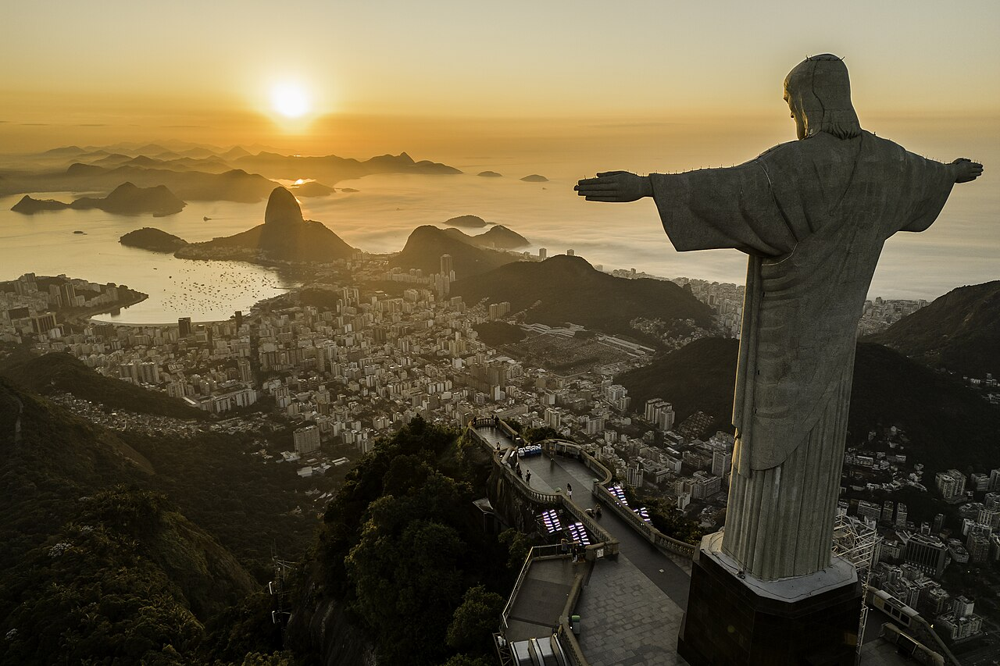
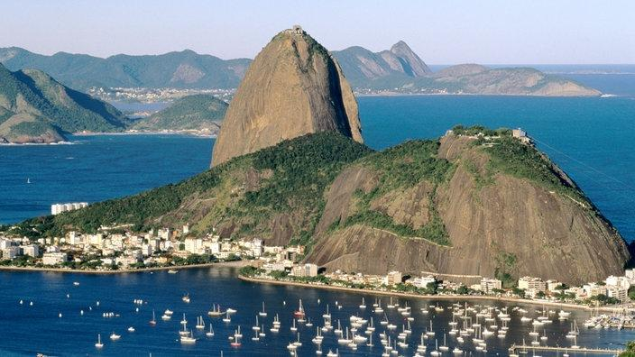
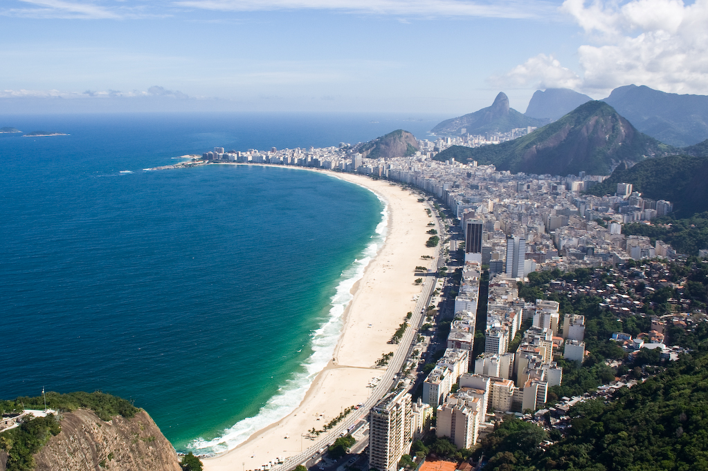
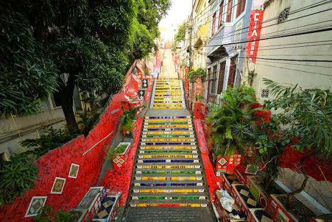
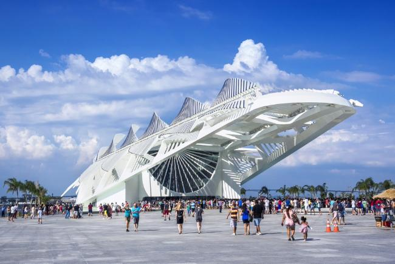

PARADA 01 / 05Cristo Redentor
Inaugurado em 1931, o Cristo Redentor foi projetado pelo engenheiro Heitor da Silva Costa e se tornou um dos símbolos mais reconhecidos do Rio. No alto do Corcovado, o monumento conecta paisagem, engenharia, religiosidade e identidade carioca.

PARADA 02 / 05Pão de Açúcar
O conjunto do Pão de Açúcar é parte inseparável da paisagem da Baía de Guanabara. A subida pelo bondinho transformou a experiência de observar o Rio do alto em uma das imagens clássicas do turismo brasileiro.

PARADA 03 / 05Copacabana
A praia e a Avenida Atlântica formam um dos cenários urbanos mais famosos da cidade. O calçadão, a faixa de areia e os prédios junto ao mar criam uma paisagem em que vida cotidiana e turismo se encontram o tempo todo.

PARADA 04 / 05Escadaria Selarón
A escadaria ganhou fama por sua composição de azulejos e cores, criando uma obra integrada ao espaço urbano. É um exemplo de como um ponto de passagem pode virar atração cultural e referência visual de uma cidade.

PARADA 05 / 05Do Rio histórico ao Rio de hoje
O Rio foi fundado em 1565 e atravessou diferentes momentos da história brasileira. Hoje, áreas históricas convivem com museus, intervenções urbanas, cultura de rua e novos usos do espaço público.
Voltar no tempo ↓Uma cidade em camadas.
Fundação da cidade de São Sebastião do Rio de Janeiro.
O Rio passa a ocupar posição central na administração colonial portuguesa.
Inauguração do Cristo Redentor no Corcovado.
Turismo, patrimônio, cultura e vida urbana continuam redesenhando a experiência da cidade.
Você percorreu o Rio!
Agora dá para continuar a viagem e trocar a paisagem carioca pelas cores e tradições de Pernambuco.